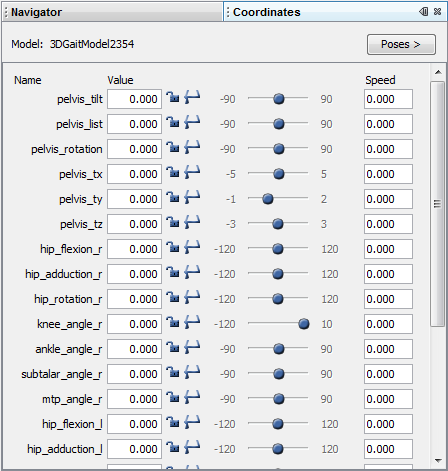
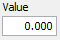
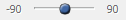
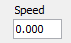
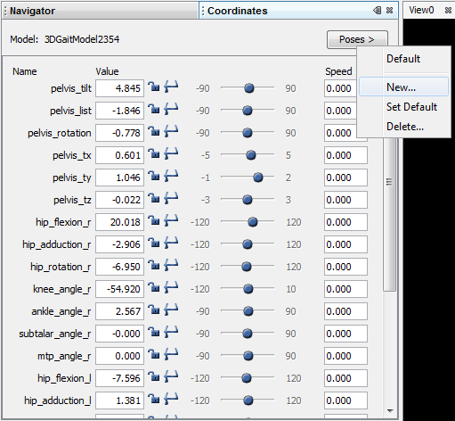
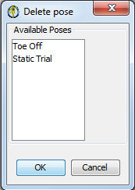

The topics included in this section are:
Opening and Closing the Coordinates Window
When you launch OpenSim, the Coordinates window is opened in the same panel as the Navigator window. As with other windows in OpenSim, you can move the Coordinates window to other locations in the application window by dragging the title bar and docking it in another panel of windows.
|  | The Coordinates window allows you to set the Value of each coordinate in the current model, as well as to lock and clamp it. As of OpenSim 3.1, the Coordinates window also allows you to set the Speed of coordinates for a forward simulation.
|
|---|
Coordinate Control
For each coordinate in the model, there is one line in the Coordinates window, specifying the name of the coordinate and the following items that control its value and speed:
value: 
This number field displays the current value in degrees for rotational coordinates and meters for translational coordinates. If you type in a new value that is outside the range of motion of a coordinate that is clamped, the current value will not be changed. If the coordinate is locked, the number field will be grayed out, but will still display the current value.
clamp: clamped =  unclamped =
unclamped = 
This toggle lets you clamp and unclamp the coordinate. When a coordinate is clamped, it cannot be set to a value outside its range of motion, either by typing in a new value, moving the slider, playing back a motion, or running a dynamic simulation. The minimum and maximum values of the range of motion are shown on either side of the coordinate's slider.
lock: locked =  unlocked =
unlocked = 
This toggle lets you lock and unlock the coordinate. When a coordinate is locked, its value cannot be changed by typing in a new value, moving the slider, playing back a motion, or running a dynamic simulation.
slider: 
The slider bar allows you to move a coordinate continuously through some or all of its range of motion. Click on the dot and drag it to a new position to change the coordinate smoothly between the minimum and maximum values.
{kind=link}
speed: 
This number field displays the speed of the coordinate in degrees/sec for rotational coordinates and meters/sec for translational coordinates. You can use this field to set the initial speed of a coordinate for a forward simulation.
{kind=link}
Poses
A pose is a set of values for all of the coordinates in a model (both values and speeds). Saving and applying poses is an efficient way of putting the model in different configurations, or poses, rather than entering coordinate values and speeds individually.
Create a New Pose
To create a new pose:
|  |
|
|---|
Applying a Pose
To apply a pose, click on the Poses > button and choose the desired pose from the list in the menu. "Default" is always the first pose in the list, followed by the user-defined poses 2). "Default" is the pose containing the default coordinate values stored in the model file.
When you apply a pose to a model, each coordinate is set to its value in the pose only if the coordinate is currently unlocked, and, if clamped, only if the value is within the coordinate's range of motion. Applying a pose also sets a speed.
Deleting a Pose
To delete a pose:
|  |
|
|---|
Next: Snapshots and Movies
Home: Coordinates Window
{kind=link}
{kind=link}
{kind=link}
{kind=link}